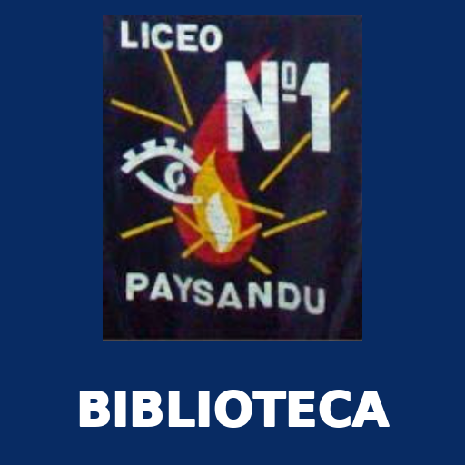

BIBLIOTECA
Liceo Nº1 de Paysandú
Libros, materiales, préstamos y recursos educativos.
Abrir biblioteca virtual ↗La biblioteca funciona con conexión a Internet. Al tocar Abrir, se accede al sistema original de Google Apps Script.

Liceo Nº1 de Paysandú
Libros, materiales, préstamos y recursos educativos.
Abrir biblioteca virtual ↗La biblioteca funciona con conexión a Internet. Al tocar Abrir, se accede al sistema original de Google Apps Script.